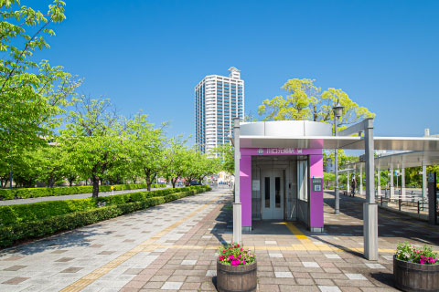
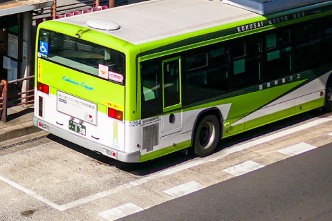

「川口元郷」駅／徒歩約16～17分
一駅隣りの「赤羽岩淵」駅から東京メトロ南北線に直通運転しているので、乗換なしで都内主要駅にアクセスできます。
JR 川口駅 東口
首都圏の交通の結節点となる「東京」「上野」「大宮」といったビッグターミナルと繋がり、
通勤・通学、週末のお出かけもスムーズなアクセスで充実します。
最寄り駅でお花見も楽しめる！
埼玉高速鉄道の「川口元郷」駅前には、安行桜の並木があります。駅前通り沿いの六間道路には、3列の桜並木が100メートルほど続きます。ソメイヨシノより1週間から10日早く咲き、花は濃いピンク色が特徴です。
「川口元郷」駅／徒歩約16～17分
一駅隣りの「赤羽岩淵」駅から東京メトロ南北線に直通運転しているので、乗換なしで都内主要駅にアクセスできます。
「川口」駅／バス約17分
都心へのアクセスが良好なのに加え、駅周辺の再開発によってさらに利便性が向上することが期待されています。
「川口元郷」駅より
「四ツ谷」駅へ直通27min (通勤時は28min)
「川口」駅より
「東京」駅へ直通25min (通勤時は29min)
【朝日一丁目】バス停まで徒歩4分（約250M）
複数の系統が停まるので便利です。
国際興業バス
国際興業バス
【川11・12・13・22・25系統】
オーケー川口末広店／約220m
オーケー川口末広店／約220m
営業時間
8:30～21:30
現地から徒歩3分。駐車場133台。食料品はオーケークラブ会員で現金払いのお客様に本体価格の3/103割引あります。
(3%相当額/酒類除く）
セイムス川口末広店／約350m
セイムス川口末広店／約350m
営業時間
8:30～22:45
現地から徒歩5分。駐車場21台。ポイントデー水曜・日曜日。調剤薬局（処方箋も受け取れます）月曜～土曜日 10:00～14:00、15:00～19:00
十二月田小学校（徒歩11分／約870m）
十二月田中学校（徒歩8分／約600m）
川口くるみ幼稚園（徒歩3分／約240m）
末広2丁目公園（徒歩5分／約400m）
朝日中央診療所（徒歩5分／約400m）
【診療科目】内科・呼吸器内科・健診・予防接種他
セブンイレブン末広2丁目店
（徒歩5分／約360m）
川口キュポ・ラ／約2.2㎞
川口キュポ・ラ／約2.2㎞
営業時間
10:00～20:00
川口駅東口より約3分。川口キュポ・ラは、ショッピングセンターや飲食店、図書館や観光案内所が併設されている複合施設です。
※一部営業時間が異なります
かわぐちキャスティ／約2.1㎞
かわぐちキャスティ／約2.1㎞
営業時間
10:00～21:00
川口駅前のショップ＆レストランビルです。「おいしい」「楽しい」「便利」なちょっとうれしい商業施設です。
※一部営業時間が異なります
アリオ川口／約2.6㎞
アリオ川口／約2.6㎞
営業時間
10:00～21:00
川口駅東口より徒歩約8分。スーパー、フードコート、映画館が入っている約90店舗を擁する複合施設です。
※一部営業時間が異なります
ミエルかわぐち／約1.2㎞
ミエルかわぐち／約1.2㎞
営業時間
10:00～21:00
川口元郷駅前の複合施設。「ヤオコー」「西松屋」「マクドナルド」「ケンタッキー」他、スポーツ用品・靴屋も入っています。
※一部営業時間が異なります